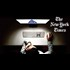

<html lang="en">
 <head>
  <meta charset="utf-8"/>
  <title>
   FULLY SOURCED: NY Times actually good Pedo Investigation (2005) + Commentary on Milo and Prime Minister Edward Heath
  </title>
  <meta content="Post on /v/Pizzagate archived on 2017-02-22 by matheasysolutions." name="description"/>
  <meta content="FULLY SOURCED: NY Times actually good Pedo Investigation (2005) + Commentary on Milo and Prime Minister Edward Heath" property="og:title"/>
  <meta content="Post on /v/Pizzagate archived on 2017-02-22 by matheasysolutions." property="og:description"/>
  <link href="../../page.css" rel="stylesheet"/>
  <meta content="https://voat.pizzagate.hackliberty.org/thumbnails/8d/28/8d284366-2a9a-4bc0-9c7d-cf0ad881e659.jpg" property="og:image"/>
  <meta content="https://voat.pizzagate.hackliberty.org/v/pizzagate/1666756.html" property="og:url"/>
  <meta content="width=device-width, initial-scale=1" name="viewport"/>
  <link href="https://voat.pizzagate.hackliberty.org/1666756.html" rel="canonical"/>
  <meta content="article" property="og:type"/>
  <meta content="Voat /v/Pizzagate Archive" property="og:site_name"/>
  <meta content="en_US" property="og:locale"/>
  <meta content="summary_large_image" name="twitter:card"/>
  <meta content="FULLY SOURCED: NY Times actually good Pedo Investigation (2005) + Commentary on Milo and Prime Minister Edward Heath" name="twitter:title"/>
  <meta content="Post on /v/Pizzagate archived on 2017-02-22 by matheasysolutions." name="twitter:description"/>
  <meta content="https://voat.pizzagate.hackliberty.org/thumbnails/8d/28/8d284366-2a9a-4bc0-9c7d-cf0ad881e659.jpg" name="twitter:image"/>
 </head>
</html>
<body class="dark">
 <div id="container">
  <!-- array (
  'submissionid' => 1666756,
  'creationDate' => '2017-02-22 05:36:05',
  'domain' => 'youtube.com',
  'formattedContent' => NULL,
  'isAdult' => 0,
  'isAnonymized' => 0,
  'subverse' => 'pizzagate',
  'thumbnail' => '8d284366-2a9a-4bc0-9c7d-cf0ad881e659.jpg',
  'title' => 'FULLY SOURCED: NY Times actually good Pedo Investigation (2005) + Commentary on Milo and Prime Minister Edward Heath',
  'url' => 'https://youtu.be/r0gDGMnkyZg',
  'userName' => 'matheasysolutions',
  'archivedLink' => NULL,
  'archivedDomain' => NULL,
  'isDeleted' => 0,
) -->
  <div style="text-align:center; font-size:24px; font-weight:bold;">
   <a href="../../index.html" style="text-decoration: none; color: inherit;">
    Voat /v/Pizzagate Archive
   </a>
  </div>
  <div class="content" role="main">
   <div class="sitetable linklisting" id="siteTable">
    <div class="submission id-1666756 link type-text" id="submission-1666756">
     <a name="submissionTop">
     </a>
     <p class="parent">
     </p>
     <a class="thumbnail may-blank" href="https://youtu.be/r0gDGMnkyZg" target="_self">
      
     </a>
     <div class="entry unvoted">
      <p class="title">
       <a class="title may-blank" href="https://youtu.be/r0gDGMnkyZg" tabindex="1" target="_self" title="FULLY SOURCED: NY Times actually good Pedo Investigation (2005) + Commentary on Milo and Prime Minister Edward Heath">
        FULLY SOURCED: NY Times actually good Pedo Investigation (2005) + Commentary on Milo and Prime Minister Edward Heath
       </a>
       <span class="domain">
        (
        <a href="https://archive.searchvoat.co/search.php?d=youtube.com">
         youtube.com
        </a>
        )
       </span>
      </p>
      <p class="tagline">
       submitted
       <time datetime="2017-02-22T05:36:05+00:00" title="02/22/2017 5:36:05 AM">
        2017-02-22T05:36:05
       </time>
       by
       <span class="userattrs">
        <a class="author may-blank" href="https://archive.searchvoat.co/search.php?u=matheasysolutions">
         matheasysolutions
        </a>
       </span>
      </p>
      <ul class="flat-list buttons">
       <li class="first">
        <a class="comments may-blank" href="https://archive.searchvoat.co/v/pizzagate/1666756" rel="nofollow">
         1 comment
        </a>
       </li>
      </ul>
     </div>
     <div class="child">
     </div>
     <div class="clearleft">
     </div>
    </div>
    <div class="clearleft">
    </div>
   </div>
   <div class="horizontal-line">
   </div>
   <div class="commentarea">
    <div class="sitetable nestedlisting" id="siteTable">
     <div class="child id-8156635 comment even" style="">
      <div class="entry unvoted">
       <div class="noncollapsed" id="8156635" style=";">
        <p class="tagline">
         <a class="author may-blank" href="https://archive.searchvoat.co/search.php?u=matheasysolutions">
          matheasysolutions
         </a>
         <span class="userattrs">
         </span>
         <time datetime="2017-02-22T05:36:30+00:00" title="2/22/2017 5:36:30 AM">
          2017-02-22T05:36:30
         </time>
        </p>
        <div class="usertext-body may-blank-within" id="commentContent-8156635">
         <div class="md">
          <p>
           <p>
            For the full series, please go here:
            <a href="https://archive.searchvoat.co/v/pizzagate/1593888">
             https://voat.co/v/pizzagate/1593888
            </a>
            :)
           </p>
          </p>
         </div>
        </div>
        <ul class="flat-list buttons">
         <li class="first">
          <a class="bylink" href="https://archive.searchvoat.co/v/pizzagate/1666756/8156635" rel="nofollow">
           link
          </a>
         </li>
        </ul>
       </div>
      </div>
     </div>
    </div>
   </div>
  </div>
 </div>
 <div class="footer-container">
 </div>
</body>
